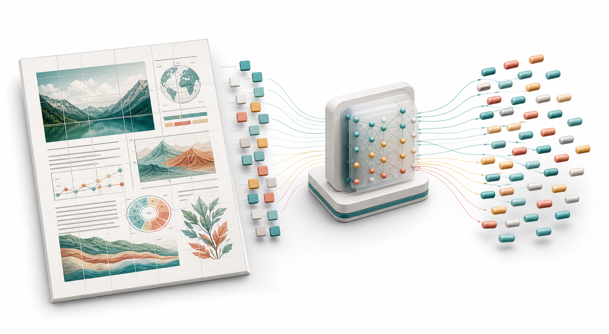
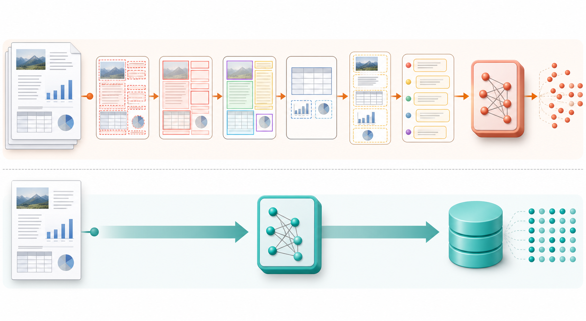
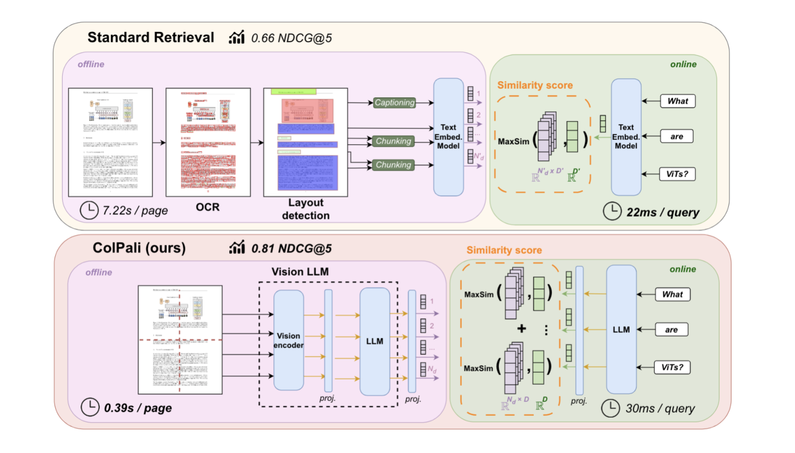
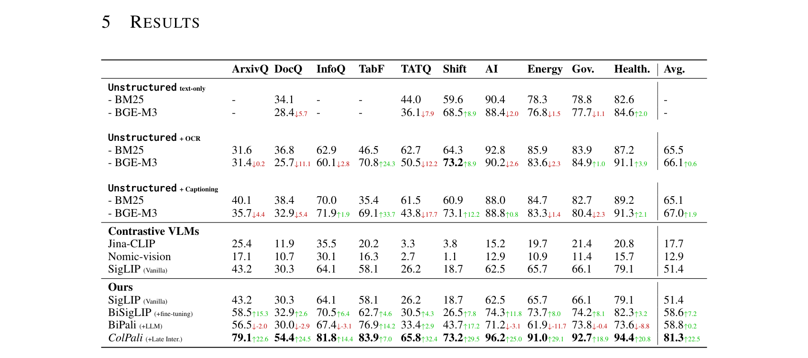
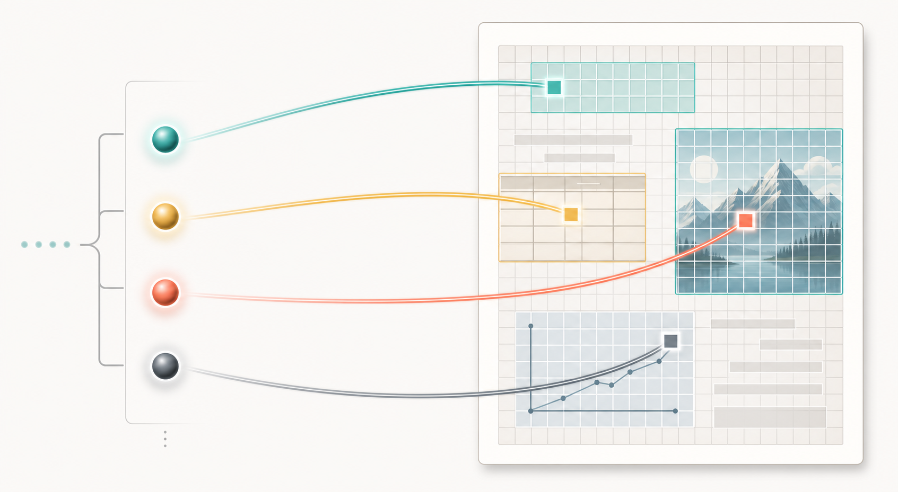
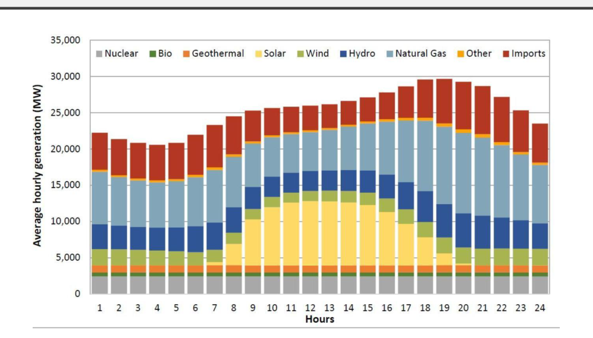
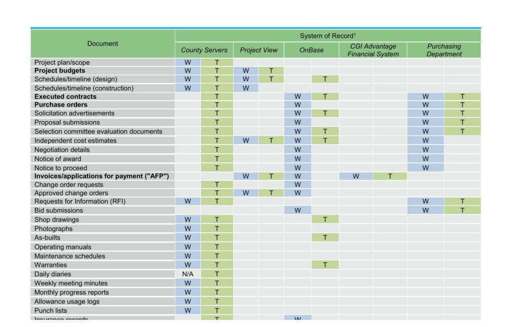
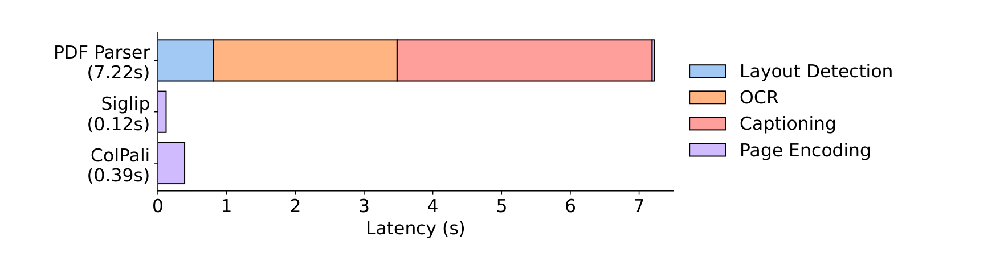
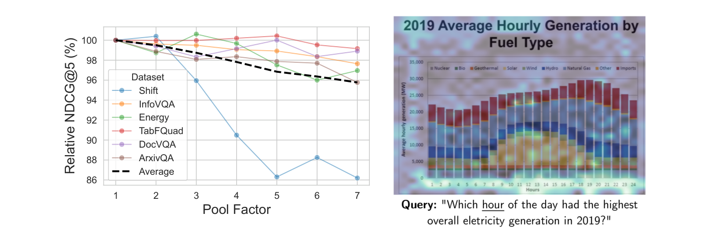
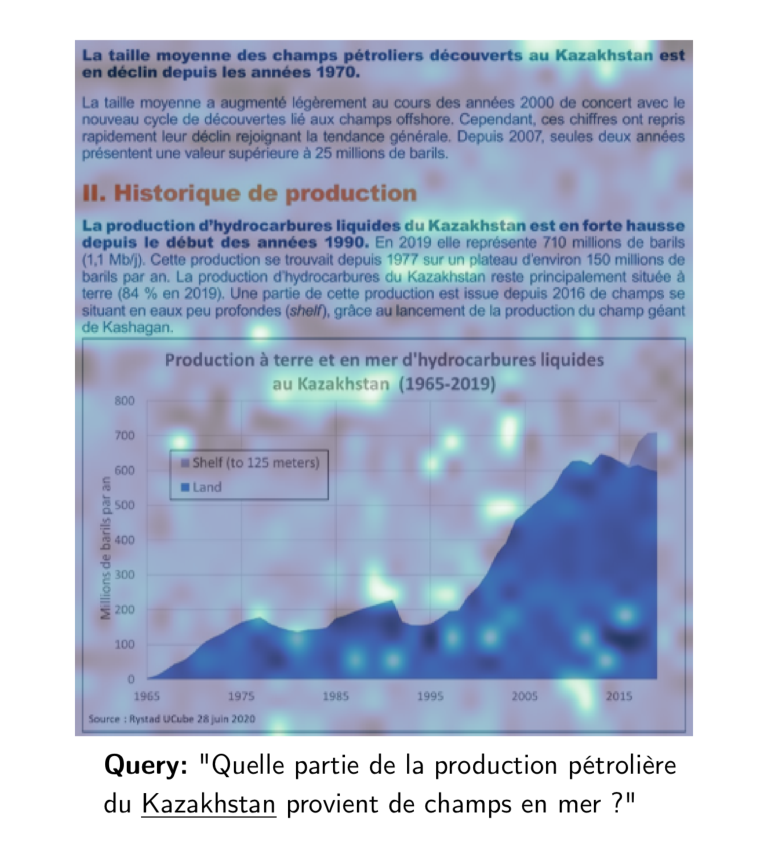

ICLR 2025 paper walkthrough
ColPali: Efficient Document Retrieval with Vision Language Models
A detailed slide deck explaining how ColPali replaces fragile PDF parsing pipelines with direct page-image embeddings and ColBERT-style late interaction.

Generated teaching figure: visual pages become multi-vector retrieval objects.
Motivation
The paper starts from a very practical failure mode: PDF ingestion is the bottleneck.
Traditional document RAG has many brittle steps
- Parse or OCR every page before retrieval can begin.
- Detect layout to separate titles, paragraphs, tables, figures, captions, headers, and footers.
- Chunk text into passages that may or may not preserve the page semantics.
- Caption visual elements if tables, charts, and diagrams carry important meaning.

ColPali's central bet: for retrieval, embed the rendered page itself and let a VLM preserve text, layout, tables, charts, and visual cues together.
Benchmark
ViDoRe evaluates page-level retrieval where visual understanding matters.
What the benchmark changes
- Atomic unit: the retrieved item is a page, not a pre-chunked text passage.
- Modalities: text, figures, infographics, tables, layouts, and scanned pages.
- Languages: English and French tasks, while ColPali's training set is English-only.
- Main metric: nDCG@5, with Recall@K and MRR also reported.
Paper figure
ColPali simplifies the retrieval stack without giving up fine-grained matching.

From the paper, Figure 1. Standard retrieval builds text chunks before embedding. ColPali embeds the rendered page directly and then performs late interaction between query vectors and page patch vectors.
Concept
The key idea: retrieve in vision space, then match query words to visual page regions.
What gets indexed?
- The document page is rendered as an image.
- The VLM divides it into image patches.
- Each patch becomes a vector in the same retrieval space as query-token vectors.
- The page is stored as a bag of vectors rather than one pooled embedding.
Why this is different from CLIP-style retrieval
A single image vector must compress the whole page into one point. ColPali keeps many vectors, so a query can independently latch onto a table cell, chart axis, title, figure, or paragraph.
Architecture
ColPali is PaliGemma adapted to output ColBERT-style vectors.
Document side
- Input is a page image.
- SigLIP-like vision encoder produces patch tokens.
- Gemma language backbone contextualizes those tokens.
- A projection maps output token embeddings to D = 128.
Query side
- Input is normal query text.
- The same language model space produces token vectors.
- The authors append 5 unused tokens as soft query augmentation buffers.
- Scoring waits until query time, hence late interaction.
| Component | Role in ColPali | Why it matters |
|---|---|---|
| SigLIP vision encoder | Turns page patches into visual tokens | Preserves page-level visual evidence. |
| Gemma-2B language model | Contextualizes image tokens in a language-aware space | Helps OCR-like and multilingual understanding. |
| 128-d projection | Reduces each token vector size | Keeps multi-vector storage less expensive. |
| MaxSim scoring | Finds best page patch for each query token | Retains fine-grained evidence without cross-encoding every page. |
Late interaction
The scoring rule is simple: each query vector gets credit from its best page patch.
This is the ColBERT compromise: richer than a bi-encoder dot product, much cheaper than running a cross-encoder over every query-page pair.
Training
Training turns PaliGemma into a retrieval model using positive query-page pairs and hard in-batch negatives.
Training recipe from the paper
- 118,695 query-page pairs: 63% academic datasets, 37% synthetic PDF pages.
- English-only training, then evaluation includes French tasks.
- LoRA adapters on language model transformer layers plus the projection layer.
- One epoch, bfloat16, learning rate 5e-5, total batch size 32.
Results
On ViDoRe, the jump comes from combining a VLM backbone with multi-vector late interaction.
Average nDCG@5 on ViDoRe
Best text pipeline here is Unstructured + captioning + BGE-M3. SigLIP represents a strong single-vector contrastive VLM baseline.
Component ladder
| Model | Change | Avg. |
|---|---|---|
| SigLIP | Vanilla vision-language bi-encoder | 51.4 |
| BiSigLIP | Fine-tuned for document retrieval | 58.6 |
| BiPali | Add language model contextualization | 58.8 |
| ColPali | Use late interaction over patch vectors | 81.3 |

From the paper, Table 2. ColPali is strongest across visually heavy tasks such as ArxivQA, InfoVQA, and TabFQuAD, and also improves text-centric practical tasks.
Why it works
Multi-vector pages let different query terms bind to different visual evidence.

One score, many local matches
- A query about an hour can match an axis label and chart region.
- A query about an entity can match repeated mentions in text.
- A query about a table field can match a cell or row header directly.
- The final page score sums these local best matches.
Single-vector page
Compresses every page detail into one vector. Fine for global semantics, fragile for dense pages with small but decisive visual facts.
Multi-vector page
Keeps patch-level evidence alive. The query can collect evidence from several page regions without re-encoding the document.
Visual evidence
The benchmark examples show why OCR text alone is a weak abstraction.

From the paper, Figure 4. A stacked chart encodes time, fuel type, color, and relative contribution. Text extraction alone would flatten much of that structure.

From the paper, Figure 5. The retrieval target may be a specific table row or column relationship, not just a paragraph.
ColPali does not need a separate choice about whether a figure is "noise", "text", "table", or "captionable". It embeds the page as the user sees it.
Latency
The speed win is mostly offline: ColPali skips the expensive parser stack.

From the paper, Figure 2. Per-page indexing latency: PDF parser pipeline 7.22s, SigLIP 0.12s, ColPali 0.39s.
Interpretation
- PDF parser stack: layout detection, OCR, captioning, and page/chunk encoding.
- ColPali: one page-image forward pass into a multi-vector index.
- Online query: about 30ms to encode a query, with late-interaction overhead around 1ms per 1,000 pages in the paper's setup.
- Scaling path: optimized late-interaction systems can support much larger corpora.
Storage
The tradeoff: multi-vector retrieval stores much more per page, then recovers with pooling and compression.
Embedding footprint reported by the paper
| Model | Embedding size per page |
|---|---|
| BGE-M3 | 8.60 KB |
| BM25 dense | 3.00 KB |
| BM25 sparse | 1.56 +/- 0.51 KB |
| ColPali float16 | 257.5 KB |
Why this is not the end of the story
- Many page patches are redundant, especially whitespace and repeated layout regions.
- Token pooling reduces the number of stored vectors while keeping most retrieval quality.
- ColBERT-style systems also support clustering, quantization, and specialized indexes.
- The right production design depends on corpus size, update pattern, and latency budget.

From the paper, Figure 3. With pool factor 3, the number of stored vectors falls by 66.7% while retaining 97.8% of original performance on average.
Interpretability
Late interaction produces useful heatmaps: which page patches answered which query term?

From the paper, Figure 6. For the query token about Kazakhstan, highlighted regions include exact text mentions and related context such as Kashagan.
Why interpretability matters here
- Retrieval failures can be debugged at patch level rather than only with a scalar score.
- Heatmaps reveal OCR-like behavior: the model often aligns query words to text regions in the image.
- They also reveal non-text visual grounding, such as chart axes or salient diagram regions.
- The paper notes some white patches may behave like register tokens, storing global information.
Ablations
The ablations say the performance is not just "use any VLM". The details matter.
What helped
- Late interaction: BiPali averages 58.8 nDCG@5; ColPali reaches 81.3.
- More visual tokens: lowering image resolution sharply hurts performance.
- Better VLM backbones: ColQwen2-VL reaches 86.6 in the reported ablation.
- Task adaptation: adding French table samples improves TabFQuAD without hurting the rest.
What did not simply transfer
- ColSigLIP fails: late interaction over SigLIP-style patches performs poorly.
- Training the vision encoder gave a small degradation in the reported setting.
- Removing query augmentation does not collapse English performance, but changes French results.
- Fewer patches reduce memory but lose the local evidence that makes the method strong.
| Variant | Average nDCG@5 | Reading |
|---|---|---|
| ColPali reference | 81.3 | Strong balance of patch count, VLM language grounding, and late interaction. |
| ColPali lower resolution | 56.5 | Memory savings can be expensive when visual evidence gets undersampled. |
| ColIdefics2 | 76.6 | Stronger language model, fewer post-resampling patches, slower than ColPali. |
| ColQwen2-VL | 86.6 | Better generative VLMs appear to transfer into better visual retrievers. |
System design
In a RAG system, ColPali changes the ingestion contract.
Practical impact
- The ingestion pipeline can be standardized around rendering pages and embedding images.
- Domain-specific fine-tuning becomes direct: train on query-page pairs instead of rebuilding parsers.
- Visual retrievers pair naturally with visual answerers that consume the retrieved page images.
- The index can retain page screenshots, patch vectors, and optional extracted text as metadata.
The paper's long-term direction is end-to-end RAG that works from image features: retrieve visually, then answer visually.
Limitations
ColPali is a strong direction, but not a free lunch.
Storage pressure
257.5 KB per page in float16 is large for millions of pages. Pooling, quantization, and specialized indexes become system requirements.
Retrieval is not answering
A retrieved page still needs a reader or VLM answerer. The quality of the final RAG response depends on both stages.
Benchmark scope
ViDoRe is page-level retrieval with bounded corpora. Production systems may need multi-page reasoning, freshness, permissions, and citation control.
Open engineering questions
- How aggressively can vectors be compressed before rare visual facts disappear?
- How should visual indexes handle document updates, deletion, and access control?
- What reranking strategy best combines page images, extracted text, and metadata?
Open research questions
- Can confidence estimation support abstention in visual retrieval?
- How far does zero-shot multilingual retrieval extend?
- Will stronger VLMs continue to translate into stronger visual retrievers?
Takeaways
ColPali reframes document retrieval as page-image matching, not text cleanup.
A compact one-sentence version: ColPali turns each document page into a searchable set of vision-language patch vectors, then ranks pages by summing each query token's strongest visual match.
Paper: Manuel Faysse, Hugues Sibille, Tony Wu, Bilel Omrani, Gautier Viaud, Celine Hudelot, Pierre Colombo. "ColPali: Efficient Document Retrieval with Vision Language Models." ICLR 2025.